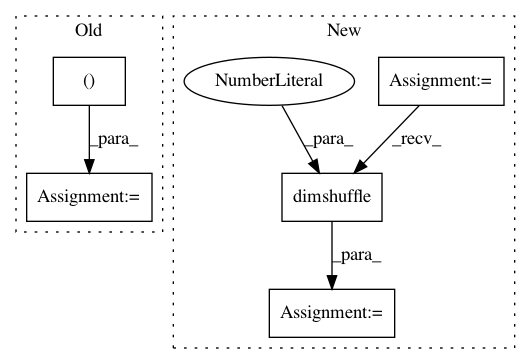

782035bbeeb080b5a33d1aeadb6b3f8e77d2ad75,pymc3/tests/test_variational_inference.py,,test_flow_det,#Any#,549
Before Change
def test_flow_det(flow_spec):
z0 = pm.tt_rng().normal(size=(10, 20))
flow = flow_spec(dim=20, z0=z0)
det = flow.logdet
det_dist = det.shape.eval()
assert tuple(det_dist) == (10, )
After Change
@change_flags(compute_test_value="off")
def test_flow_det(flow_spec):
z0 = tt.arange(0, 20).astype("float32")
flow = flow_spec(dim=20, z0=z0.dimshuffle("x", 0))
z1 = flow.forward.flatten()
J = tt.jacobian(z1, z0)
logJdet = tt.log(tt.abs_(tt.nlinalg.det(J)))
det = flow.logdet[0]
np.testing.assert_allclose(logJdet.eval(), det.eval(), atol=0.0001)
In pattern: SUPERPATTERN
Frequency: 4
Non-data size: 5
Instances
Project Name: pymc-devs/pymc3
Commit Name: 782035bbeeb080b5a33d1aeadb6b3f8e77d2ad75
Time: 2017-07-10
Author: maxim.v.kochurov@gmail.com
File Name: pymc3/tests/test_variational_inference.py
Class Name:
Method Name: test_flow_det
Project Name: UFAL-DSG/tgen
Commit Name: 930f22933523259b1a152dc3174312357fb99fb9
Time: 2015-06-15
Author: odusek@ufal.mff.cuni.cz
File Name: tgen/nn.py
Class Name: MaxPool1DLayer
Method Name: connect
Project Name: pymc-devs/pymc3
Commit Name: 52a00e981b6ace618694b0db160f0c8952ea941d
Time: 2017-05-22
Author: maxim.v.kochurov@gmail.com
File Name: pymc3/variational/test_functions.py
Class Name: RBF
Method Name: __call__
Project Name: UFAL-DSG/tgen
Commit Name: 357d1611c7a222b55a5b4f2b3399bde14a9ac0ea
Time: 2015-05-27
Author: odusek@ufal.mff.cuni.cz
File Name: tgen/nn.py
Class Name: MaxPool1DLayer
Method Name: connect